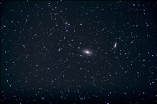
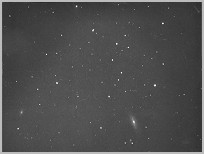
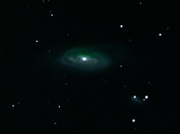
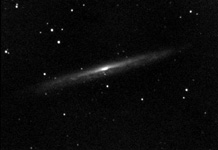
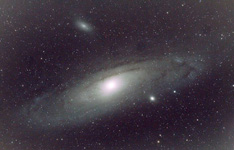
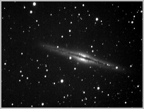
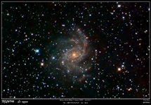

Les galaxies de la Grande Ourse, Messier 81 et 82, sont situées à environ 12 millions d'années de lumière. Photographie réalisée en 1h 20 min de pose à 800 ISO grâce à un appareil photo numérique Canon 1000D muni d'un téléobjectif de 400 mm de focale (F/D=2,8)
Les Galaxies
Probablement nées environ 1 milliard d'années après le Big Bang, les galaxies peuplent l'Univers dans toutes les directions, bien qu'il existe des zones de vide. Les galaxies se regroupent en amas et superamas. Notre groupe local, qui comprend notre Voie lactée, la galaxie d'Andromède M. 31, celle du Triangle M. 33 et une vingtaine d'autres galaxies, est satellite de l'amas de la Vierge, qui lui-même fait partie du superamas local: Laniakea


M 90 dans la constellation de la Vierge, photographie argentique

La galaxie spirale Messier 90 dans la constellation de la Vierge est située à environ 60 millions d'années-lumière.

La galaxie spirale vue par la tranche NGC 5907 dans la constellation du Dragon. Pose de 37 minutes grâce au télescope de 254 mm de diamètre ( F/D = 6,3 ) de l'Observatoire de Rouen.

La galaxie d'Andromède, Messier 31

NGC 891 dans la constellation d'Andromède

La galaxie spirale NGC 6946 dans la constellation du Cygne. Image réalisée au centre-ville d'Evreux en 2 heures de pose (F/D=8) au foyer d'un télescope de 200mm de diamètre muni d'une caméra CCD.